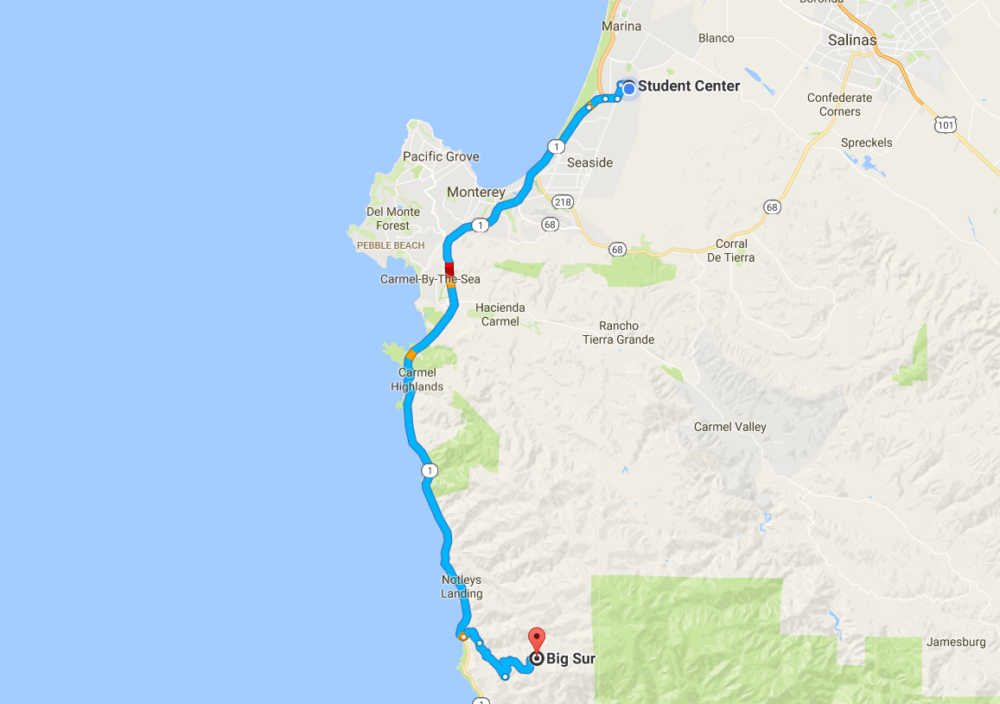
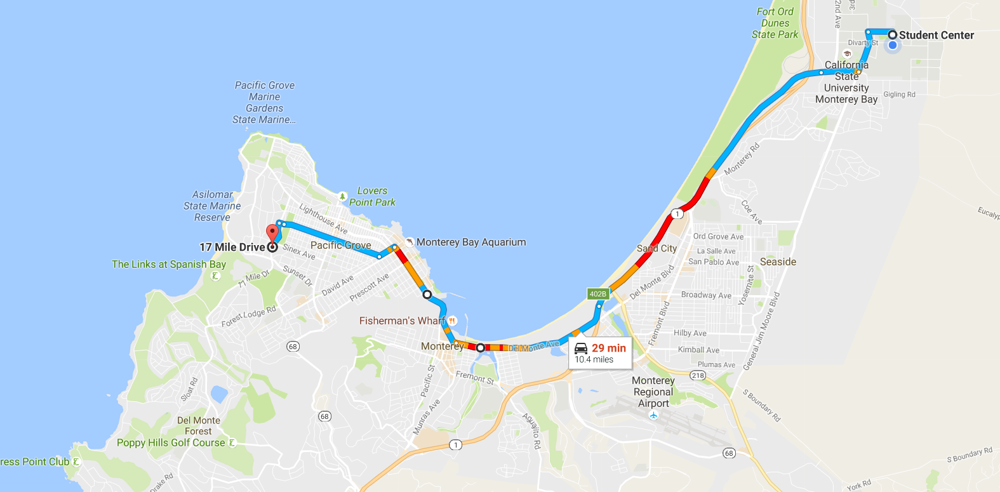
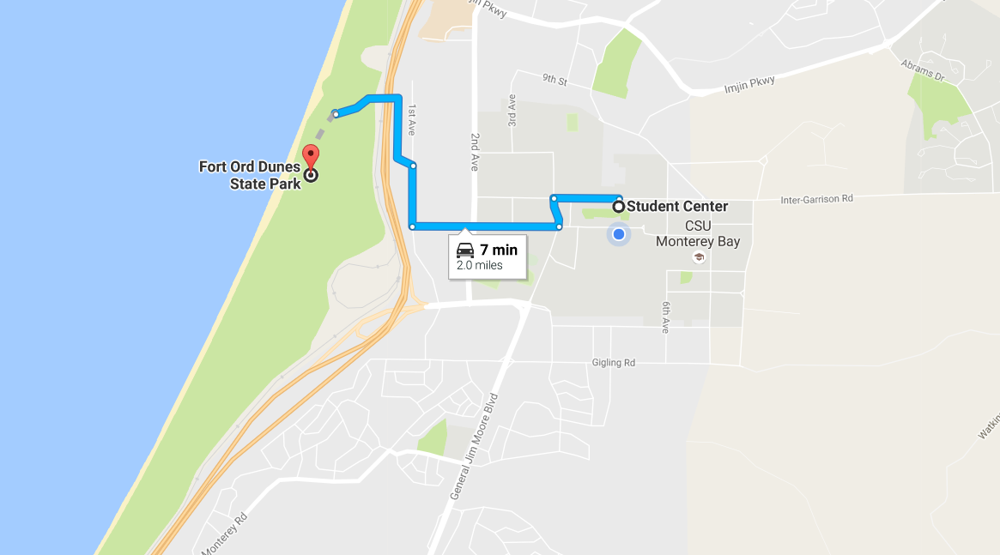
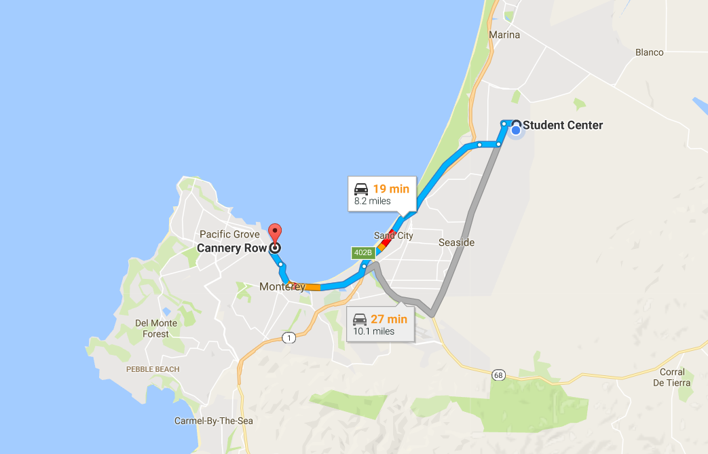
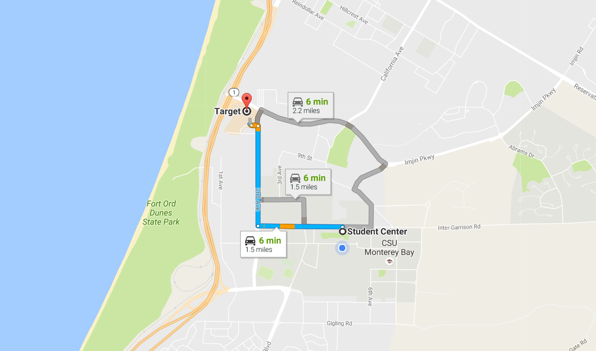
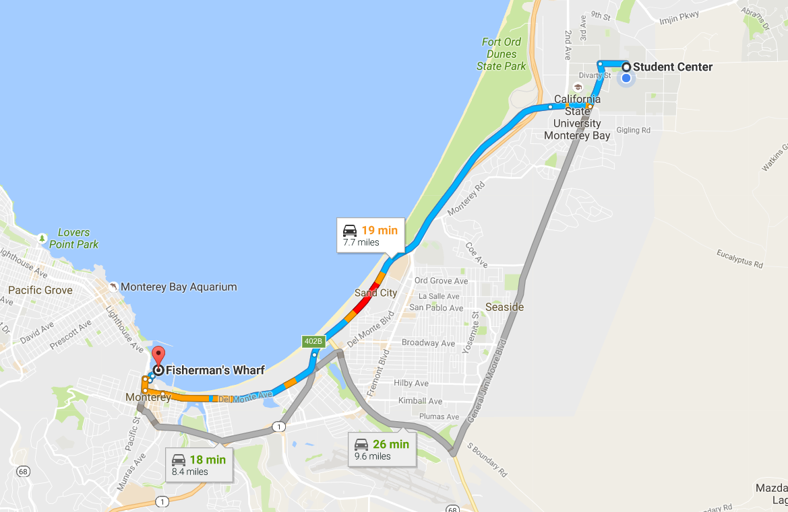
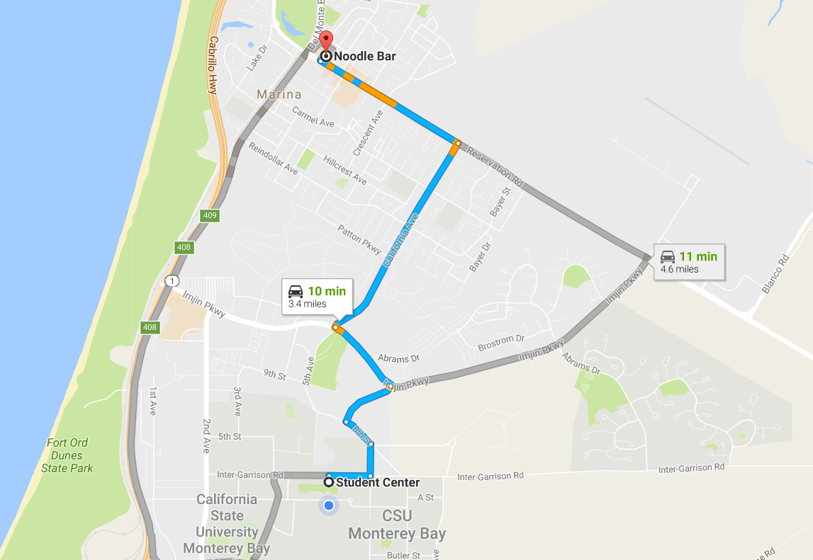
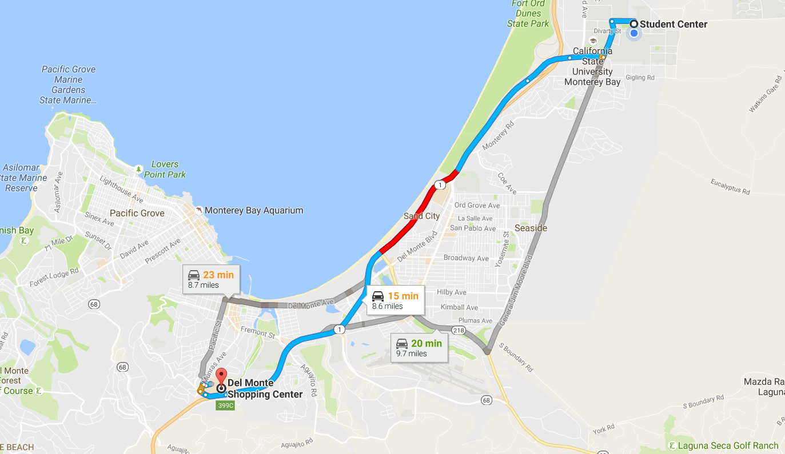
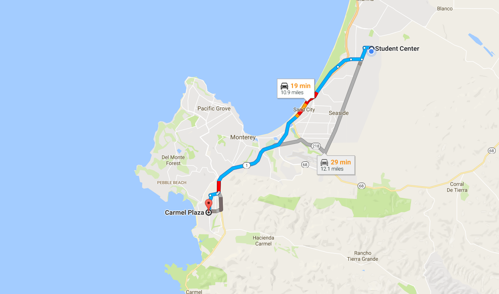

Now that you have finished your tour of the campus, here are some local areas you may be interested in seeing:
Highway 1 through Big Sur is a National Scenic Byway with plenty of amazing site to be seen. There are many different local hiking locations from beaches to trailing up mountains. Even some restaurants can be seen along the route. As you drive down the one ocean views that are out of this world will be on the right, while the nature and forestry will be on the left. There are many spots along the way to spot, explore, and take pictures of the surrounding areas.
Learn more here! The 17 Mile Drive is one of the most scenic drives in the world. The costal drive goes from Pacific Grove to Pebble Beach. Throughout the drive you will experience a variety of scenery from the Del Monte Forest to the Pacific coastline.
Learn more here! Being so close to the ocean has it's advantages! As a student you are about two miles from the ocean if you were to walk! The pathway is set, many students walk to the beach between classes, on the weekends to take a nice and relaxing break by the ocean.
Cannery Row is the most popular vacation destination on the coast. Originally Cannery Row was an industrial row full of whaling and a main sardine industry. Over the years the area has been restored and developed into a modern representation with many shops, restaurants, and activities to do on Cannery Row!
Learn more here! The closet store near the campus that can fulfill all the needs you need. From the grocery aspect to the necessities you may need in your dorm.
Learn more here! The Wharf is a great experience full of restaurants, shops, sailing, fishing, whale watching, and observing sea lions. Of course if you want to have a say in what the best Clam Chowder is on the Wharf, take a walk down and grab a sample or two from the restaurants!
Learn more here! Noodle bar is a very popular local restaurant student's go to for asian cuisine and of course boba!
Learn more here! The closest shopping center to CSUMB, offerning a variety of shopping locations, restaurants, and a movie theater to vist while you are at Del Monte!
Learn more here! The Carmel Plaza is a great area full of local boutiques, items from around the globe, and many different styles of restaurants. The area is full of hidden walkways and areas to explore. If you choose to walk straight down Ocean Ave, you will reach a marvelous beach. There is a lot to explore in this area!
Learn more here! 